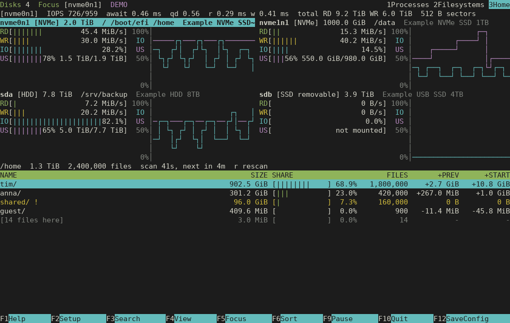
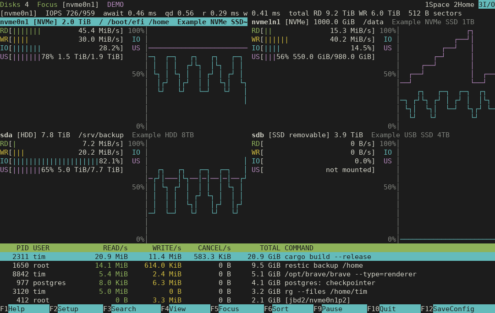

At home in your terminal.
Your space.
In plain sight.
Watch used and free space across your disks. Follow fill levels over time and find growing directories. A Linux terminal space monitor with the familiar feel of htop and nvtop.
Built in Rust Made for Linux GPLv3 licensed
Know what is full.Used and free space, with fill history per disk.
Follow the growth.Directory sizes and changes across scans.
Inspect I/O when needed.Disk activity and process rates in a separate view.
Every disk.
Room to spare.
dwtop opens on storage space: fill levels, history and filesystems. Switch to Home to follow directory growth, or open the I/O view for reads, writes and processes. It adapts from a wide screen down to a 36 × 16 terminal.
Select a view to see the real interface.
F5 Focus a disk
F4 Choose Space, Home or I/O
/ Search the table
F12 Save your setup


Native terminal colors. English or German. Your theme comes with you.
Set up once.
Just run dwtop.
Build from source and install to your user directory. dwtop runs as your regular user right away; the optional helper adds every user’s processes and the directory sizes below approved roots (default /home). Either way, start dwtop without sudo.
You’ll need Linux and Rust 1.88+. The commands here use Ubuntu 24.04 or newer.
What does the optional helper do?
Without it, dwtop shows your own processes and the directories you can read, and says how many processes are hidden. Setting up the helper asks for administrator authentication once and installs a root-owned collector with only cap_dac_read_search and cap_sys_ptrace. Members of your primary group can then see all processes’ storage I/O and the directory names and sizes below the scan roots an administrator lists in /etc/dwtop/scan-roots (default /home), never file names or contents. Setup refuses a shared primary group unless you opt in, and the administrator who authenticates must trust your checkout, since root installs the helper you built. The terminal UI itself never gains privileges. For existing installations, policy lookup tries /etc/dwtop/scan-roots, then /etc/spctop/scan-roots, then /etc/disktop/scan-roots, moving on only when a file is absent. An invalid policy fails closed; /home is the default only when all three files are absent.
Open source under the GNU GPLv3 or later. No GitHub account needed to clone.
git clone https://github.com/itmitalles-de/dwtop.git
cd dwtop
./scripts/install.sh
# Optional, once: setcap tools + helper
sudo apt install libcap2-bin
./scripts/setup-helper.sh
# From now on, no sudo
~/.local/bin/dwtopdwtop --demoA labeled preview with synthetic data.Real counters.
Clear boundaries.
Used and free space come from mounted filesystems, mapped to their disks through partitions, LUKS, LVM and MD. Directory scans stay on one filesystem and track growth within the session without reading file contents.
Partial scans and unavailable data remain visible. The separate I/O view uses kernel disk and process counters; process I/O cannot be attributed to a device, and processes that exit between refreshes are not listed.
Understand the measurements